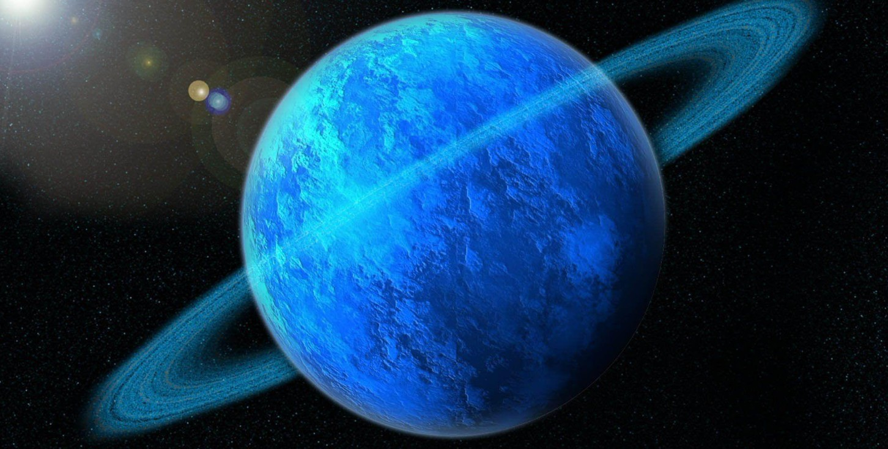

Uranus
Uranus is the seventh planet from the Sun and is known for its pale blue colour. It is an ice giant made mostly of water, methane, and ammonia.
Uranus is unique because it rotates on its side, meaning its axis is tilted at a very extreme angle. This causes unusual seasons that can last for many years.

Facts About Uranus
- Uranus rotates on its side compared to other planets.
- It is known as an ice giant.
- Uranus has a pale blue colour due to methane gas.
- It takes about 84 Earth years to orbit the Sun.
- Uranus has 27 known moons.